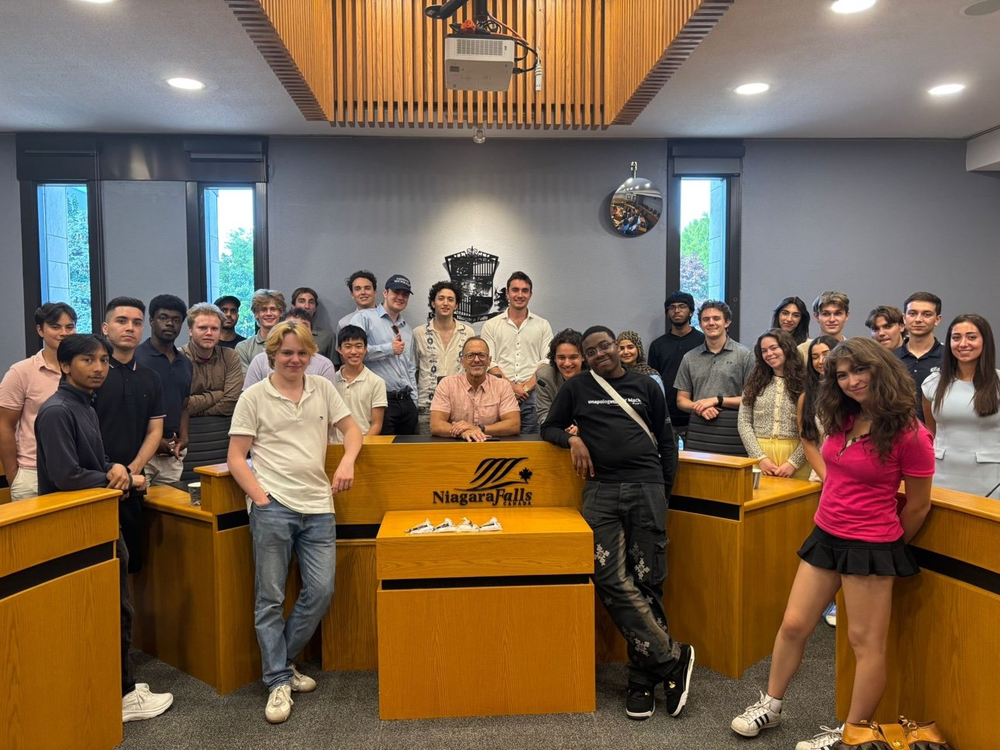

First feature
No coverage yet. This space is ready for the first one.
Coverage and research publications, grouped together, as they come.

Not yet. I have not been featured in the news yet. When coverage happens, it will be listed here with the outlet, date, and a link.
No coverage yet. This space is ready for the first one.
Topics I am interested in. None of this is published research yet. When I write something worth sharing, I will put it here.
How campaign messages spread, including social media and door-to-door outreach. Campaign and constituency work is where this question comes from: what actually changes a voter's mind, a doorstep conversation or a post, and how do you tell the difference?
How government decisions become programs and services. This is the day-to-day work of a constituency office: a policy is announced, then someone has to turn it into forms, phone calls, and help for a real person.
Housing costs, food insecurity, and transportation in Toronto. These are the issues that come up most at doors and in constituency correspondence, and they are the focus of the Ward 19 campaign work.
What affects political participation and trust in public institutions. Young Politicians of Canada events and Model UN work both point at the same question: why do some people get involved and others stay away?
How public choices about resources affect households. Cost of living is not an abstract number; it is rent, groceries, and transit fares, and policy choices land differently depending on where a household starts.
When I write something worth sharing, I will put it here.